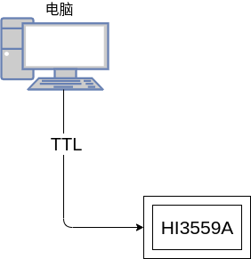

shuixia06-liteos-uart_user
[TOC]
一、概述
通用异步收发器 UART（Universal Asynchronous Receiver Transmitter）是一个异步串行的通信接口，主要功能是将来自外围设备的数据进行串并转换之后传入内部总线，以及将数据进行并串转换之后输出到外部设备。UART 的主要功能是和外部芯片的UART 进行对接，从而实现两芯片间的通信。 主 SOC 子系统提供 5 个 UART 单元：
-
UART0：2 线 UART，主要用于调试。
-
UART1/3：4 线 UART。
-
UART2/4：2 线 UART。
-
Sensor Hub 子系统提供了 7 个 UART。
-
UART0/1/2：4 线 UART。
-
UART3/4/5/6：2 线 UART
UART 模块有以下特点：
-
支持 64 x 8bit 的发送 FIFO 和 64 x 12bit 的接收 FIFO。
-
支持数据位和停止位的位宽可编程。数据位可通过编程设定为 5/6/7/8 比特；停止位可通过编程设定为 1bit 或 2bit。
-
支持奇、偶校验方式或者无校验。
-
支持传输速率可编程。
-
支持接收 FIFO 中断、发送 FIFO 中断、接收超时中断、错误中断。
-
支持初始中断状态查询和屏蔽后中断状态查询。
-
支持通过编程禁止 UART 模块或者 UART 发送/接收功能以降低功耗。
-
支持关断 UART 时钟以节省功耗。
-
支持 DMA 操作。
二、 参考文件
GPIO复用功能描述文件《Hi3559A V100_PINOUT_EN.xlsx》
驱动操作使用指南《外围设备驱动 操作指南.pdf》
寄存器相关操作《Hi3559A╱C V100 ultra-HD Mobile Camera SoC 用户指南.pdf》
三、驱动编译
1.官方驱动
源码路径为 drivers/uart。用户需要对 UART 设备进行访问操作时，首先要在编译脚本里指定 UART源码路径与头文件路径。编译成功后，out目录下会生成名为 libuart.a 的库文件。链接时需要通过-luart参数指定该库文件。
文件列表
| 文件名称 | 描述 | 备注 |
|---|---|---|
| drivers/uart/***.c | 接口源文件 | |
| drivers/uart/libuart.a | 静态库文件 | |
| 等等 |
使用步骤
-
步骤 1. 在初始化函数中调用以下接口实现 UART 驱动注册：
uart_dev_init();
由于 shell多用 UART0 作为通信交互与调试信息打印。应该完成以上 UART 驱动注册。
如果启用 dma 方式接收数据，要进行 dmac初始化，初始化函数中调用：
hi_dmac_init();
-
步骤 2. 开发者根据设备硬件特性配置相关的管脚复用。
具体请参考《Hi3559AV100_PINOUT_CN》中管脚控制寄存器页签。
-
步骤 3. 通过/dev/ uartdev-x 节点调用 open打开指定 UART。
-
步骤 4. 打开 UART后可调用 ioctl 配置。
-
步骤 5. 打开 UART后可调用 read，write读取数据，与发送数据，可采用 select阻塞 read。
-
步骤 6. 不使用 UART 时，调用 close 关闭。关闭后 UART 控制器不会再接收串口接收线上的数据。
2.用户驱动
官方的驱动很大一部分需要用户了解一些底层知识，比如串口的基本信息，包括了设置串口的参数，自行设置IO口的复用功能，并且需要用户用户调用ioctl函数，ioctl函数包含一些数据结构体以及堵塞接收等等，因此在官方驱动的基础上封装了一层用户驱动。
用户驱动的使用如下：
-
调用串口初始化函数
hal_uart_initial()
-
创建接受线程，等待接收数据被唤醒
hal_uart_read()
-
发送数据
hal_uart_write()
四、API说明
1.官方驱动
官方提供的驱动如下所示：提供了open()函数、close()函数、read()函数、write()函数、ioctl()函数以及poll()函数，poll()函数用于用户程序阻塞访问，不对外提供接口，close()函数用于资源的释放，因此仅需要考克open()、write()、read()、ioctl()函数。
const struct file_operations_vfs uartdev_fops =
{
.open = uartdev_open,
.close = uartdev_release,
.read = uartdev_read,
.write = uartdev_write,
.seek = NULL,
.ioctl = uartdev_ioctl,
#ifndef CONFIG_DISABLE_POLL
.poll = uartdev_poll,
#endif
.unlink = NULL
};
open()
/******************************************************************************
函数功能：posix标准函数，用于打开一个设备
输入参数：
__path：设备、串口设备为："/dev/uartdev-0" "/dev/uartdev-1" "/dev/uartdev-2" "/dev/uartdev-3" "/dev/uartdev-4"
__oflag：打开方式：O_RDWR：可读可写
输出参数：
文件句柄，负数：错误 非负数：打开成功
******************************************************************************/
open (const char *__path, int __oflag, ...)
write()
/******************************************************************************
函数功能：posix标准函数，往设备写数据
输入参数：
__fd：open()返回的文件句柄
*__buf：将要发送的数据指针
__n：将要发送的数据长度
输出参数：
成功发送的数据长度
******************************************************************************/
ssize_t write (int __fd, const void *__buf, size_t __n)
read()
/******************************************************************************
函数功能：posix标准函数，往设备读数据
输入参数：
__fd：open()返回的文件句柄
*__buf：期望读取的数据指针
__n：期望读取的数据长度
输出参数：
成功读取的数据长度
******************************************************************************/
ssize_t (*read)(FAR struct file *filep, FAR char *buffer, size_t buflen);
ioctl()
/******************************************************************************
函数功能：posix标准函数，用来设置一个设备
输入参数：
__fd：open()返回的文件句柄
cmd：设置的参数类型
arg：设置的参数
输出参数：
读取数据时，返回的数据
******************************************************************************/
int (*ioctl)(FAR struct file *filep, int cmd, unsigned long arg);
可设置的参数如下：
| UART_CFG_BAUDRATE | 0x101 | 波特率 | 配置波特率，UART0 默认波特率为115200；UART1、UART2、UART3为9600支持最大波特率为 921600。 |
|---|---|---|---|
| UART_CFG_DMA_RX | 0x102 | 0、1 | 0：配置为中断接收方式；1：配置为 DMA接收方式默认为中断方式 |
| UART_CFG_DMA_TX | 0x103 | 0、1 | 暂未支持 |
| UART_CFG_RD_BLOCK | 0x104 | 0、1 | 0：配置为非阻塞方式 read；1：配置为事件阻塞方式 read ;默认为阻塞方式； |
| UART_CFG_ATTR | 0x105 | &uart_attr | 配置校验位，数据位，停止位，FIFO，CTS/RTS 等 默认值为：无校验位，8 位数据位，1 位停止位，禁能 CTS/RTS。 参考头文件 struct uart_attr |
| UART_CFG_PRIVATE | 0x110 | 自定义 | 驱动自定命令 |
2.用户驱动
void hal_uart_initial()
/****************************************************
* 函数功能：串口初始化
* 输入参数：
* port：串口设备，2或者3
* bandrate：波特率
* stopbit：停止位 0:1bit 1:1.5bit 2:2bit
* parity：校验 0：无校验 1：奇校验 2：偶校验
* *************************************************/
void hal_uart_initial(uint8_t port,uint32_t bandrate,uint8_t stopbit,uint8_t parity)
uint32_t hal_uart_write()
/****************************************************
* 函数功能：串口发送
* 输入参数：
* port：串口号
* buff：发送的数据指针
* len： 发送的数据长度
* 输出参数：
* 成功发送的数据长度
* *************************************************/
uint32_t hal_uart_write(uint8_t port,void* buff,uint32_t len){
if(!serial_flag[port])return 0;
return write(serial_fd[port], buff, len);
}
uint32_t hal_uart_read()
/****************************************************
* 函数功能：串口接收
* 函数说明：接收会一直阻塞
* 输入参数：
* port：串口号
* buff：接收的数据指针
* len： 接收的数据长度
* 输出参数：
* 成功接收的数据长度
* *************************************************/
uint32_t hal_uart_read(uint8_t port,void* buff,uint32_t len)
uint8_t hal_uart_wait()
/****************************************************
* 函数功能：等待串口有接收数据
* 函数说明：没有数据时候会释放线程
* 输入参数：
* port：串口号
* 输出参数：
* 1：有数据 0：无数据
* *************************************************/
uint8_t hal_uart_wait(uint8_t port)
五、使用说明
由于用户驱动已经封装了一层API，因此直接调用用户API接口即可。
- 调用hal_uart_initial()初始化
- 创建接收线程
- 线程函数中调用hal_uart_wait()等待数据
- 读取数据
- 反馈数据
user_uart.c
#include "user_uart.h"
uint8_t tx_buff[256] = {1,2,3,4,5,6,7,8};
uint8_t rx_buff[256];
#define TPORT 2 //串口2
pthread_mutex_t mutex_uart;
static void *uart_readmsg(void *arg){
uint32_t recv_len,send_len;
pthread_mutex_init(&mutex_uart, NULL);//todo
while(1){
if(hal_uart_wait(TPORT)){
recv_len = hal_uart_read(TPORT,rx_buff,256);
if(recv_len){
pthread_mutex_lock(&mutex_uart);
memcpy(tx_buff, rx_buff, recv_len);
send_len = recv_len;
pthread_mutex_unlock(&mutex_uart);
hal_uart_write(TPORT, tx_buff, send_len);
}
}
}
}
void uart_test(void){
pthread_t id;
int ret;
pthread_attr_t use_attr;
dprintf("start uart2 test!\n");
hal_uart_initial(TPORT,115200,0,0);
use_attr.inheritsched = PTHREAD_EXPLICIT_SCHED;
use_attr.detachstate = PTHREAD_CREATE_DETACHED;
ret = pthread_create(&id, &use_attr, uart_readmsg, NULL);
if (ret) {
dprintf("can read thread create failed!\n");
}
}

将相关代码拷贝到SDK目录下，其具体路径为：osdrv/platform/liteos_a53/liteos/sample/sample_osdrv，对程序进行编译，make之后便可以得到可执行文件，将该文件烧写到板卡上便可以执行，其测试步骤如上图所示：电脑通过USB转TTL模块输出一个TTL的UART信号，与HI3559A上的UART模块直接相连，从而实现通信，在电脑上用串口调试助手给HI3559A板卡发送数据，HI3559A板卡接收到数据后反馈同样的信息给电脑。
六、注意事项
- 使用UART设备之前必须先配置IO复用功能(UART0、UART1、UART2已经默认配置为UART功能)。
- CAN0与uart0复用功能，需要谨慎使用。
- 官方的板卡上有拨码开关，需要配置对应的拨码开关选择GPIO功能。
- TTL模块的TXD、RXD需要交换。
- 电平为TTL电平，禁止使用RS422、RS232连接到板卡。